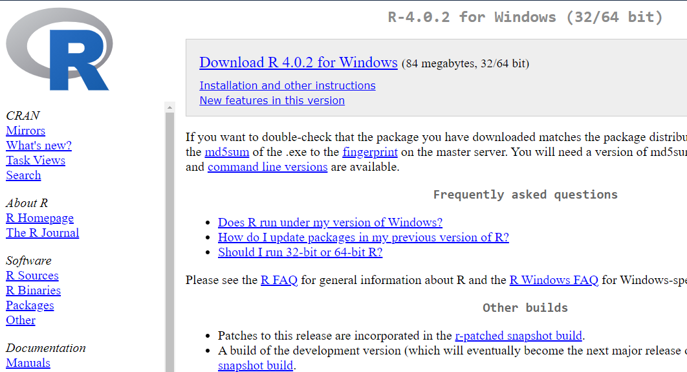

O R
Aula 01: Instalação e comandos básicos
Cassio Almeida
O Software R
Histórico
- R foi criado em 1990 na Universidade de Auckland por Ross Ihaka e Robert Gentleman
- Inspirado na linguagem S que foi desenvolvido na Bell Laboratories (1970)
- R – open Source, 1995
- R 1.0.0 em 2000 - R Core Team
Software Livre
R está disponível como Software Livre nos termos da Licença Pública Geral GNU do Free Software Foundation em código fonte
R - O que é?
R é uma linguagem e um ambiente computacional para manipulação de dados, estatística e gráficos
É um ambiente dentro do qual as técnicas estatísticas são implementadas
Sistema Operacionais
- compila e funciona em plataformas Linux, Windows e MacOS.
Packages
R pode ser estendido (facilmente) através de pacotes - alguns (oito) pacotes fornecidos com a distribuição R - e muitos outros (14763) estão disponíveis no sites
Documentation
R tem seu próprio formato de documentação tipo LaTeX
Site
- https://www.r-project.org/
- CRAN - Comprehensive R Archive Network (URLs)
- ex. https://cran.fiocruz.br/
Download e Instalação

Subdiretorios e versões

Sistemas Operacionais
RStudio
RStudio - O que é?
O ambiente integrado facilita e potencializa a programação em R
RStudio - Características
- IDE - Ambiente Integrado de Desenvolvimento
- Contém: console, editor (syntax-highlighting e execução)
- Gerencia os gráficos (plots)
- History
- Work space e Debbug
Download

Escolha do instalador (Sistema Operacional)

Principais Funções

Usando o Script
Criando um Script

Salvando o Script

O Script Salvo
Código no Script
Executando comandos